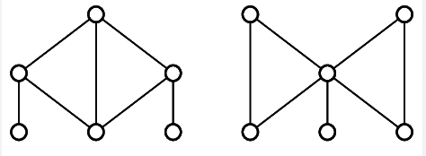
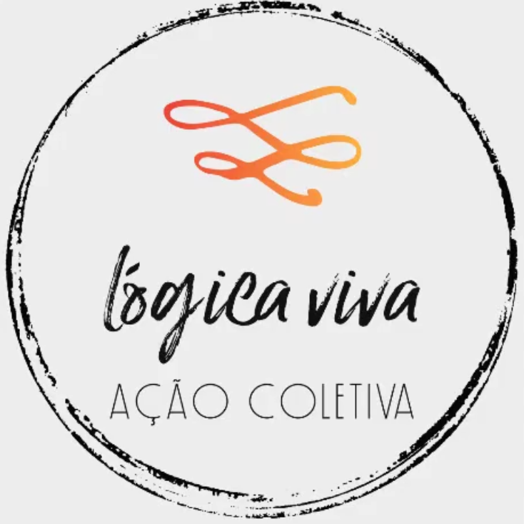
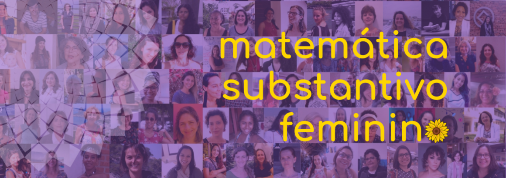
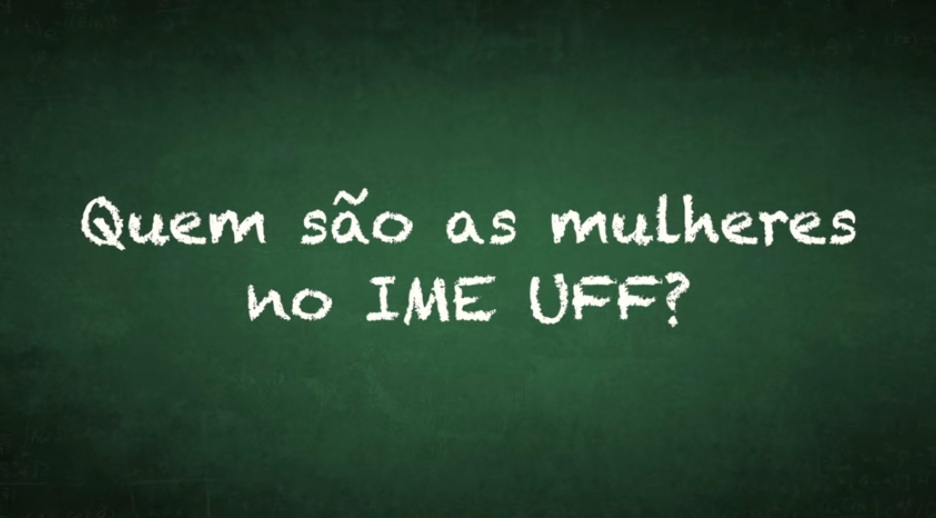
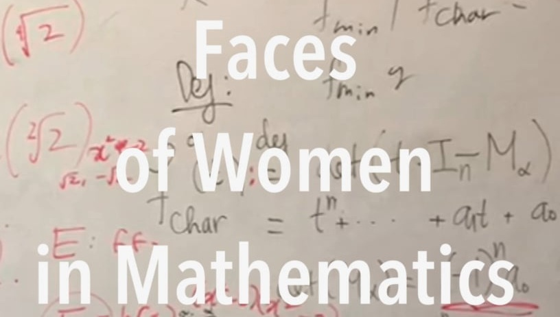

| . |
V Colóquio de Matemática da Região Sudeste |
|
Workshop de Teoria Espectral de Grafos |
. |
 |
Miriam Abdón, Lucas Portugal, Renata Del-Vecchio and Renata de Freitas, Spectral properties of k-uniform threshold hypergraphs, Linear and Multilinear Algebra 2026, pp. 1-16, doi.org/10.1080/03081087.2026.2708901.
Renata de Freitas and Leandro Suguitani, A diagrammatic solution to a problem on orders, in C. Russo, L. Suguitani, M.D. Passos (eds), XX Brazilian Logic Conference - Book of Abstracts, Salvador, 2022, pp. 102-104, ISBN: 978-65-00-52076-7. [Full version]
Márcia R. Cerioli, Renata de Freitas and Petrucio Viana, Another Calculational Proof of Cantor’s Theorem, Anais do III Workshop Brasileiro de Lógica (WBL 2022):9-16, 2022, doi: 10.5753/wbl.2022.223244. [pdf]
Renata de Freitas and Petrucio Viana, Set Venn diagrams applied to inclusions and non-inclusions, JoLLI 24:457-485, 2015, doi:10.1007/s10849-015-9227-2. [pdf]
Renata de Freitas, Leandro Suguitani and Petrucio Viana, Relation algebras throughout Galois connections. In V. Punocha and P. Dancak (Eds.): The Logica Yearbook 2013. College Publications, London, 2014, pp. 49-62. [pdf]
Renata de Freitas and Petrucio Viana, The second Venn diagrammatic system. T. Dwyer et al. (Eds.): Diagrams 2014, LNAI 8578:295-309, 2014. [pdf]
Renata de Freitas and Petrucio Viana, A graph calculus for proving intuitionistic relation algebraic equations. Diagrams 2012, LNAI 7352:324-326, 2012. [pdf]
Mario Benevides, Renata de Freitas and Petrucio Viana, Propositional Dynamic Logic with Storing, Recovering and Parallel Composition. LSFA'10, ENTCS 269:95-107, 2011. [pdf]
Renata de Freitas, Paulo A.S. Veloso, Sheila R.M. Veloso, Petrucio Viana, A calculus for graphs with complement. LNAI 6170:84-98, 2010. [pdf]
Paulo A.S. Veloso, Sheila R.M. Veloso, Petrucio Viana, Renata de Freitas, Mario Benevides and Carla Delgado, On Vague Notions and Modalities: a modular approach. Logic Journal of the IGPL 18:381-402, 2010, doi:10.1093/jigpal/jzp041. [pdf]
Renata de Freitas et al., On graph reasoning, Information and Computation 207:1000-1014, 2009, doi:10.1016/j.ic.2008.11.004. [pdf]
Renata de Freitas and Petrucio Viana, A note on proofs with graphs, Science of Computer Programming 73:129-135, 2008, doi:10.1016/j.scico.2008.08.002. [pdf]
Renata de Freitas e Petrucio Viana, Prova do Teorema de Cantor: Uma Introdução à Prática Matemática, IME-UFF, Niterói, 2023 (texto para a disciplina GAN 00189 - Lógica, Números e Funções).
Igor Figueiredo, Provador de Teoremas para GeoBGL, Trabalho de conclusão de curso, Instituto de Computação, UFF, 2022. [pdf] [código]
Renata de Freitas and Leandro Suguitani, Richard Bird's problem: a diagrammatic solution. unpublished, 2022. [pdf]
Maurício Pires e Renata de Freitas, Um sistema de reescrita para a Álgebra da Interseção, UFF, Niterói, 2016. [slides] (trabalho classificado entre os 10 melhores da Área de Ciências Exatas e da Terra, no Prêmio Vasconcellos Torres 2016)
Leonara Alves e Renata de Freitas, Método de Contagem por Princípios: resolução de exercícios, UFF, Niterói, 2015. [slides]
Danilo Souza, Renata de Freitas, e Petrucio Viana, Método de Provas por Diagramas Numerados: uma justificativa algébrica. manuscrito, 2013. [pdf]
Petrucio Viana e Renata de Freitas, Introdução à Lógica Modal, III ERMAC, SBMAC-UFF, Niterói, 1994. [capa-sumário-introdução] [capítulo 1] [capítulo 2] [capítulo 3] [capítulo 4] [capítulo 5] [apêndice-bibliografia]
Quem tiver interesse em Iniciação Científica, na área de Lógica e Métodos Formais, entre em contato por email: renatafreitas @ id.uff.br.
Os IC-Seminários são uma série de seminários de Iniciação Científica do IME-UFF. Para maiores informações, visite a página dos IC-Seminários.
- Combinatória de Contagem - Fantasma Blitz . Quadradinhos de crochê . Sorteio com um dado . Campeonato Carioca Feminino 2024

Lugar de mulher é onde ela quiser
| . |
|
 |
. |
| . |
|
| . |
| . |
Grupos da UFF combatem desigualdade de gênero na ciência
|
 |
. |
Pesquisadoras da UFF destacam o papel da mulher no universo acadêmico
|
 |
. |